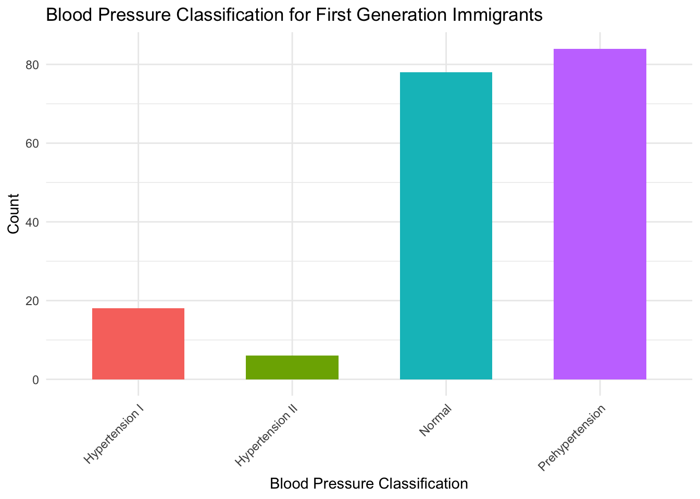

Health Outcomes
The National Longitudinal Study of Adolescent to Adult Health (Add Health) is a large and nationally representative longitudinal study that follows a cohort of U.S. adolescents from adolescence to adulthood. This comprehensive data set is ideal for researching immigrant health outcomes as it captures information pertaining to immigration status, experiences as immigrants, and health factors across the lifecourse. For first generation immigrants in particular, this dataset enables us to analyze how immigrant generation status influences their health outcomes over time to highlight health disparities across immigrant groups to better target the needs asylum seekers and refugees commonly face.
Note: The datasets used for this analysis are publicly available, thus the sample size is much larger than for the private use data that is available on a secure data enclave that requires an IRB.
Demographic Characteristics
Code
w1data <- read.csv("w1inhome.csv") %>%
clean_names() %>%
select(aid, h1gi14, h1gi11, h1gi12, h1gi13m, h1gi4, h1gi8, h1nm6, h1nf6)
w4data <- read_sas("w4inhome.sas7bdat") %>%
clean_names() %>%
mutate(
across(everything(), ~ type.convert(as.character(.), as.is = TRUE)),
first_gen = case_when(
h4od4 == 0 ~ 1,
h4od4 == 1 ~ 0,
TRUE ~ NA_real_
)
)
merged_df <- w1data %>%
inner_join(w4data, by = "aid") %>%
mutate(
first_generation = case_when(
h4od4 == 0 | h1gi11 == 0 ~ 1,
TRUE ~ 0
),
second_generation = case_when(
h1nm6 == 0 | h1nf6 == 0 ~ 1,
TRUE ~ 0
),
third_generation = case_when(
first_generation == 0 & second_generation == 0 ~ 1,
TRUE ~ 0
)
)
generation_counts <- merged_df %>%
summarize(
first_generation = sum(first_generation, na.rm = TRUE),
second_generation = sum(second_generation, na.rm = TRUE),
third_generation = sum(third_generation, na.rm = TRUE)
) %>%
pivot_longer(everything(), names_to = "Generation", values_to = "Count")
generation_counts %>%
kable(
caption = "Individuals by Generation Status",
col.names = c("Generation Status", "Count"),
align = "lc",
format = "markdown"
)| Generation Status | Count |
|---|---|
| first_generation | 257 |
| second_generation | 189 |
| third_generation | 4730 |
| Generation Status | Count |
|---|---|
| first_generation | 257 |
| second_generation | 189 |
| third_generation | 4730 |
In this data set, there are 257 first generation immigrants, 189 second generation immigrants, and 4730 third generation immigrants.
Blood Pressure
Code
filtered_df <- merged_df %>%
mutate(across(
c(h4bpcls, h4id5b, h4bmicls),
~ replace(.,
(cur_column() == "h4bpcls" & (h4bpcls == 6 | h4bpcls == 7 | h4bpcls == 9)) |
(cur_column() == "h4id5b" & (h4id5b == 6 | h4id5b == 8)) |
(cur_column() == "h4bmicls" & (h4bmicls == 88 | h4bmicls == 89 | h4bmicls == 96 | h4bmicls == 97 | h4bmicls == 99)),
NA)
)) %>%
drop_na(h4bpcls, h4id5b, h4bmicls)
bp_table <- filtered_df %>%
filter(!(h4bpcls == 6 | h4bpcls == 7 | h4bpcls == 9)) %>%
mutate(
h4bpcls = recode(h4bpcls,
`1` = "Normal",
`2` = "Prehypertension",
`3` = "Hypertension I",
`4` = "Hypertension II")) %>%
group_by(h4bpcls, first_generation, second_generation, third_generation) %>%
summarize(n = n(), .groups = 'drop')
bp_table <- bp_table %>%
pivot_wider(
names_from = c("first_generation", "second_generation", "third_generation"),
values_from = n,
values_fill = list(n = 0)
) %>%
rename(
`First Generation` = `1_0_0`,
`Second Generation` = `0_1_0`,
`Third Generation` = `0_0_1`,
`Blood Pressure Classification` = h4bpcls
) %>%
select(`Blood Pressure Classification`, `First Generation`, `Second Generation`, `Third Generation`)Among first-generation immigrants, 18 are classified as Hypertension I, 6 as Hypertension II, 78 as Hypertension III, and 84 as Prehypertensive. Compared to second-generation immigrants, there were higher counts of among all-groups,notably, prehypertension.
| Blood Pressure Classification | First Generation | Second Generation | Third Generation |
|---|---|---|---|
| Hypertension I | 18 | 17 | 680 |
| Hypertension II | 6 | 4 | 180 |
| Normal | 78 | 44 | 1557 |
| Prehypertension | 84 | 59 | 2148 |
Code
bp_first_gen <- bp_table %>%
pivot_longer(cols = `First Generation`, names_to = "Generation", values_to = "Count") %>%
filter(Generation == "First Generation")
bp_first_gen_plot <- bp_first_gen %>%
ggplot(aes(x = `Blood Pressure Classification`, y = Count, fill = `Blood Pressure Classification`)) +
geom_bar(stat = "identity", width = 0.6) +
labs(
title = "Blood Pressure Classification for First Generation Immigrants",
x = "Blood Pressure Classification",
y = "Count",
fill = "Blood Pressure"
) +
scale_x_discrete(labels = c("Hypertension I", "Hypertension II", "Normal", "Prehypertension")) +
theme_minimal() +
theme(
axis.text.x = element_text(angle = 45, hjust = 1),
legend.position = "none"
)
Among first-generation immigrants, the highest counts of blood pressure classification were in the prehypertension category.
Relationship between First Generation Immigrant Status and Blood Pressure
Research Question: Is there a relationship between first-generation immigrant status and blood pressure outcome?
Generalized Linear Models Exposure: First-Generation Immigrant Outcomes of Interest: Systolic Blood Pressure (SBP) & DBP Covariates: Age (standardized), Sex, Education, Income
Model 1: Relationship between first-generation immigrant status and systolic blood pressure, controlling for standardized age, sex, race/ethnicity, education, and income.
Model 2: Relationship between first-generation immigrant status and diastolic blood pressure, controlling for standardized age, sex, race/ethnicity, education, and income.
Code
filtered_df <-
filtered_df %>%
mutate(age = 2008 - h4od1y,
age_standardized = scale(age)) %>%
rename(sex = bio_sex4,
race = h1gi8,
education = h4ec1,
income = h4ed2)Code
filtered_df |>
lm(h4sbp ~ first_generation + age_standardized + sex + race + education + income, data = _) |>
broom::tidy() |>
knitr::kable(digits = 4)| term | estimate | std.error | statistic | p.value |
|---|---|---|---|---|
| (Intercept) | 140.8767 | 1.3224 | 106.5324 | 0.0000 |
| first_generation | -2.4865 | 0.8297 | -2.9970 | 0.0027 |
| age_standardized | 0.7605 | 0.1809 | 4.2034 | 0.0000 |
| sex | -10.0826 | 0.3640 | -27.6972 | 0.0000 |
| race | 0.1199 | 0.1659 | 0.7230 | 0.4697 |
| education | 0.0069 | 0.0079 | 0.8748 | 0.3817 |
| income | -0.2862 | 0.0702 | -4.0779 | 0.0000 |
| term | estimate | std.error | statistic | p.value |
|---|---|---|---|---|
| (Intercept) | 140.8767 | 1.3224 | 106.5324 | 0.0000 |
| first_generation | -2.4865 | 0.8297 | -2.9970 | 0.0027 |
| age_standardized | 0.7605 | 0.1809 | 4.2034 | 0.0000 |
| sex | -10.0826 | 0.3640 | -27.6972 | 0.0000 |
| race | 0.1199 | 0.1659 | 0.7230 | 0.4697 |
| education | 0.0069 | 0.0079 | 0.8748 | 0.3817 |
| income | -0.2862 | 0.0702 | -4.0779 | 0.0000 |
There is a statistically significant relationship between being a first-generation immigrant and systolic blood pressure (p-value = 0.0027). The intercept of -2.4865 indicates that being a first-generation immigrant is associated with a 2.49 mmHg decrease in systolic blood pressure compared to second or third generation individuals, controlling for age, sex, race, education, and income.
Code
filtered_df |>
lm(h4dbp ~ first_generation + age_standardized + sex + race + education + income, data = _) |>
broom::tidy() |>
knitr::kable(digits = 4)| term | estimate | std.error | statistic | p.value |
|---|---|---|---|---|
| (Intercept) | 87.1321 | 1.0417 | 83.6479 | 0.0000 |
| first_generation | -1.9677 | 0.6535 | -3.0108 | 0.0026 |
| age_standardized | 1.1147 | 0.1425 | 7.8212 | 0.0000 |
| sex | -4.7905 | 0.2868 | -16.7061 | 0.0000 |
| race | 0.0799 | 0.1307 | 0.6114 | 0.5410 |
| education | -0.0024 | 0.0063 | -0.3828 | 0.7019 |
| income | -0.1919 | 0.0553 | -3.4697 | 0.0005 |
| term | estimate | std.error | statistic | p.value |
|---|---|---|---|---|
| (Intercept) | 87.1321 | 1.0417 | 83.6479 | 0.0000 |
| first_generation | -1.9677 | 0.6535 | -3.0108 | 0.0026 |
| age_standardized | 1.1147 | 0.1425 | 7.8212 | 0.0000 |
| sex | -4.7905 | 0.2868 | -16.7061 | 0.0000 |
| race | 0.0799 | 0.1307 | 0.6114 | 0.5410 |
| education | -0.0024 | 0.0063 | -0.3828 | 0.7019 |
| income | -0.1919 | 0.0553 | -3.4697 | 0.0005 |
There is a statistically significant relationship between being a first-generation immigrant and diastolic blood pressure (p-value = 0.0026). The intercept of -1.9677 indicates that being a first-generation immigrant is associated with a 1.97 mmHg decrease in diastolic blood pressure compared to second or third generation individuals, controlling for age, sex, race, education, and income.
Body Mass Index
Code
bmi_table <- filtered_df %>%
filter(!(h4bmicls == 88 | h4bmicls == 89 | h4bmicls == 96| h4bmicls == 97 | h4bmicls == 99)) %>%
mutate(h4bmicls = recode(h4bmicls,
`1` = "Underweight <18.5",
`2` = "Normal 18.5 - < 25",
`3` = "Overweight 25 - <30",
`4` = "Obese I 30-<35",
`5` = "Obese II: 35-<40",
`6` = "Obese III: 40+")) %>%
group_by(h4bmicls, first_generation, second_generation, third_generation) %>%
summarize(n = n(), .groups = 'drop')
bmi_table <- bmi_table %>%
pivot_wider(
names_from = c("first_generation", "second_generation", "third_generation"),
values_from = n,
values_fill = list(n = 0)
) %>%
rename(
`First Generation` = `1_0_0`,
`Second Generation` = `0_1_0`,
`Third Generation` = `0_0_1`,
`BMI Classification` = `h4bmicls`
) %>%
select(`BMI Classification`, `First Generation`, `Second Generation`, `Third Generation`)| BMI Classification | First Generation | Second Generation | Third Generation |
|---|---|---|---|
| Normal 18.5 - < 25 | 68 | 34 | 1440 |
| Obese I 30-<35 | 33 | 31 | 842 |
| Obese II: 35-<40 | 16 | 11 | 461 |
| Obese III: 40+ | 8 | 12 | 393 |
| Overweight 25 - <30 | 57 | 36 | 1360 |
| Underweight <18.5 | 4 | 0 | 69 |
Among first-generation immigrants, higher counts appear in the Normal, Overweight, and Obese I categories.
Code
bmi_first_gen <- bmi_table %>%
pivot_longer(cols = `First Generation`, names_to = "Generation", values_to = "Count") %>%
filter(Generation == "First Generation")
bmi_first_gen_plot <- bmi_first_gen %>%
ggplot(aes(x = `BMI Classification`, y = Count, fill = `BMI Classification`)) +
geom_bar(stat = "identity", width = 0.6) +
labs(
title = "BMI Classification for First Generation Immigrants",
x = "BMI Classification",
y = "Count",
fill = "BMI"
) +
scale_x_discrete(labels = c("Normal 18.5 - < 25", "Obese I 30-<35", "Obese II: 35-<40","Obese III: 40+", "Overweight 25 - <30","Underweight <18.5")) +
theme_minimal() +
theme(axis.text.x = element_text(angle = 45, hjust = 1), legend.position = "none")
The BMI classification table yields important findings to consider. Many first-generation immigrants in the sample fall into the Obese I or Overweight categories.
Relationship between First Generation Immigrant Status and Body Mass Index
Research Question: Is there a relationship between first-generation immigrant status and body mass index (BMI)?
Generalized Linear Models Exposure: First-Generation Immigrant Outcomes of Interest: BMI Covariates: Age (standardized), Sex, Education, Income
Model 1: Relationship between first-generation immigrant status and BMI, controlling for standardized age, sex, race/ethnicity, education, and income.
Code
filtered_df |>
lm(h4bmi ~ first_generation + age_standardized + sex + race + education + income, data = _) |>
broom::tidy() |>
knitr::kable(digits = 4)| term | estimate | std.error | statistic | p.value |
|---|---|---|---|---|
| (Intercept) | 31.1549 | 0.7565 | 41.1836 | 0.0000 |
| first_generation | -1.2040 | 0.4746 | -2.5368 | 0.0112 |
| age_standardized | 0.4337 | 0.1035 | 4.1903 | 0.0000 |
| sex | 0.5135 | 0.2082 | 2.4659 | 0.0137 |
| race | -0.1844 | 0.0949 | -1.9433 | 0.0520 |
| education | -0.0034 | 0.0045 | -0.7461 | 0.4556 |
| income | -0.2748 | 0.0402 | -6.8443 | 0.0000 |
| term | estimate | std.error | statistic | p.value |
|---|---|---|---|---|
| (Intercept) | 31.1549 | 0.7565 | 41.1836 | 0.0000 |
| first_generation | -1.2040 | 0.4746 | -2.5368 | 0.0112 |
| age_standardized | 0.4337 | 0.1035 | 4.1903 | 0.0000 |
| sex | 0.5135 | 0.2082 | 2.4659 | 0.0137 |
| race | -0.1844 | 0.0949 | -1.9433 | 0.0520 |
| education | -0.0034 | 0.0045 | -0.7461 | 0.4556 |
| income | -0.2748 | 0.0402 | -6.8443 | 0.0000 |
There is a statistically significant relationship between being a first-generation immigrant and BMI (p-value = 0.0112). The estimate of -1.2040 indicates that being a first-generation immigrant is associated with a 1.20 decrease in BMI compared to second or third generation individuals, controlling for age, sex, race, education, and income.
Blood Cholesterol
Code
cholesterol_table <- filtered_df %>%
count(h4id5b, first_generation, second_generation, third_generation) %>%
filter(!(h4id5b == 6 | h4id5b == 8)) %>%
mutate(
h4id5b = recode(h4id5b,
`0` = "No",
`1` = "Yes")
) %>%
pivot_wider(
names_from = c("first_generation", "second_generation", "third_generation"),
values_from = n,
values_fill = list(n = 0)
) %>%
rename(
`First Generation` = `1_0_0`,
`Second Generation` = `0_1_0`,
`Third Generation` = `0_0_1`,
`High Cholesterol` = `h4id5b`
) %>%
select(`High Cholesterol`, `First Generation`, `Second Generation`, `Third Generation`)| High Cholesterol | First Generation | Second Generation | Third Generation |
|---|---|---|---|
| No | 168 | 119 | 4190 |
| Yes | 18 | 5 | 375 |
While mosst first-generation immigrants reported no high blood cholesterol, more first-generation immigrants reported yes compared to second-generation immigrants.
Code
cholesterol_first_gen <- cholesterol_table %>%
pivot_longer(cols = c(`First Generation`),
names_to = "Generation",
values_to = "Count") %>%
filter(Generation == "First Generation")
cholesterol_first_gen_plot <- cholesterol_first_gen %>%
ggplot(aes(x = `High Cholesterol`, y = Count, fill = `High Cholesterol`)) +
geom_bar(stat = "identity", width = 0.6) +
labs(
title = "Blood Cholesterol Classification for First Generation Immigrants",
x = "Blood Cholesterol Classification",
y = "Count",
fill = "Blood Cholesterol"
) +
scale_x_discrete(labels = c("No", "Yes")) +
theme_minimal() +
theme(
axis.text.x = element_text(angle = 45, hjust = 1),
legend.position = "none"
)
Mean Arterial Pressure
Mean arterial pressure is the average arterial pressure in one cardiac cycle, systole and diastole. This health outcome indicates how well organs are receiving blood flow and abouyt overall cardiac output status.
Code
filtered_df |>
lm(h4map ~ first_generation + age_standardized + sex + race + education + income, data = _) |>
broom::tidy() |>
knitr::kable(digits = 4)| term | estimate | std.error | statistic | p.value |
|---|---|---|---|---|
| (Intercept) | 105.0493 | 1.0702 | 98.1608 | 0.0000 |
| first_generation | -2.1415 | 0.6714 | -3.1894 | 0.0014 |
| age_standardized | 0.9962 | 0.1464 | 6.8035 | 0.0000 |
| sex | -6.5552 | 0.2946 | -22.2509 | 0.0000 |
| race | 0.0932 | 0.1343 | 0.6940 | 0.4877 |
| education | 0.0007 | 0.0064 | 0.1108 | 0.9118 |
| income | -0.2234 | 0.0568 | -3.9328 | 0.0001 |
| term | estimate | std.error | statistic | p.value |
|---|---|---|---|---|
| (Intercept) | 105.0493 | 1.0702 | 98.1608 | 0.0000 |
| first_generation | -2.1415 | 0.6714 | -3.1894 | 0.0014 |
| age_standardized | 0.9962 | 0.1464 | 6.8035 | 0.0000 |
| sex | -6.5552 | 0.2946 | -22.2509 | 0.0000 |
| race | 0.0932 | 0.1343 | 0.6940 | 0.4877 |
| education | 0.0007 | 0.0064 | 0.1108 | 0.9118 |
| income | -0.2234 | 0.0568 | -3.9328 | 0.0001 |
There is a statistically significant relationship between first-generation immigrant status and mean arterial pressure (p-value = 0.0014). The estimate of -2.1415 indicates that being a first-generation immigrant is associated with a 2.1415 decrease in BMI compared to second or third generation individuals, controlling for age, sex, race, education, and income.